The World of Asteria – From Above and Below
scroll
project summary:
A publication exploring the World of Asteria, a Dungeons and Dragons homebrew campaign book based on the style of D&D books
outcome
publication
dimensions
5.5" x 8.5"
role
layout design, information architecture, publication
tools
inDesign Procreate Notion
time period
April – May 2022
Based on the style of Dungeons & Dragons (D&D) books, this booklet was made for my personal D&D campaign. My main goal for this booklet was to create a comprehensive and stylistically consistent booklet that anyone could use to run a campaign (a D&D game) in this world. I also wanted to give it that worn and torn feeling often associated with older medieval D&D campaign settings. I created all of the layout, as well as all of the images and copy.
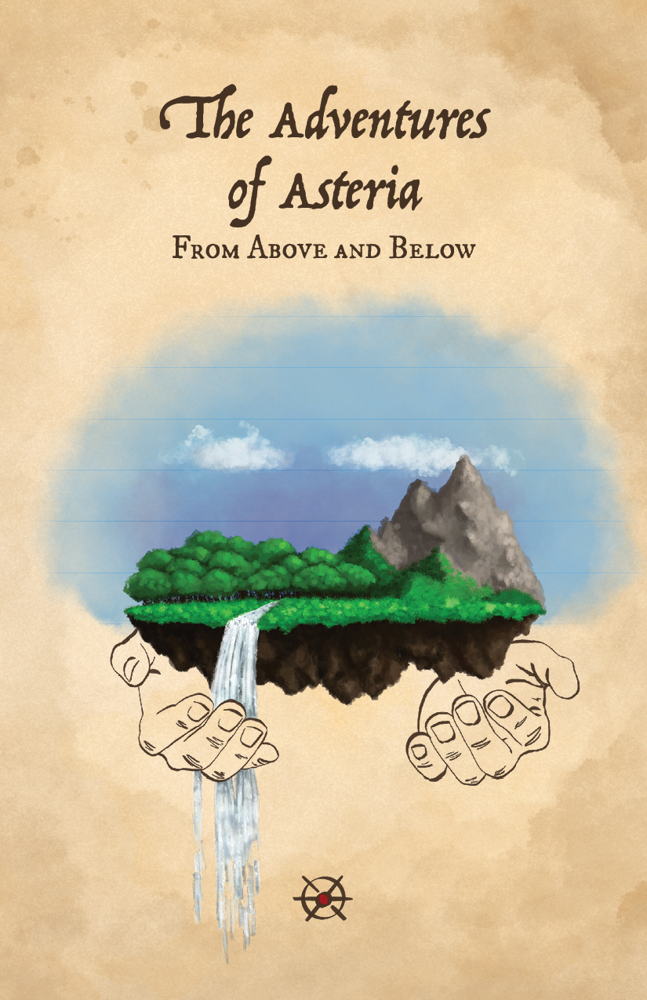
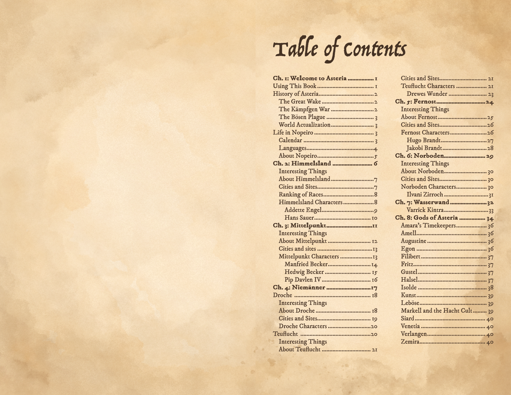
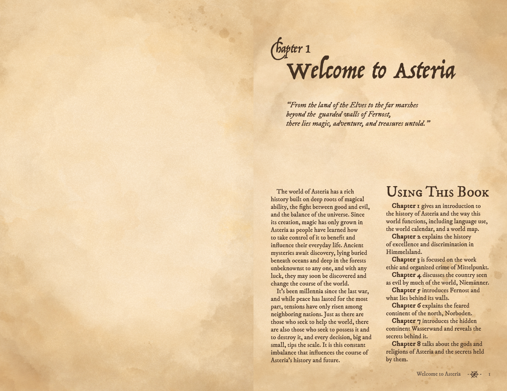
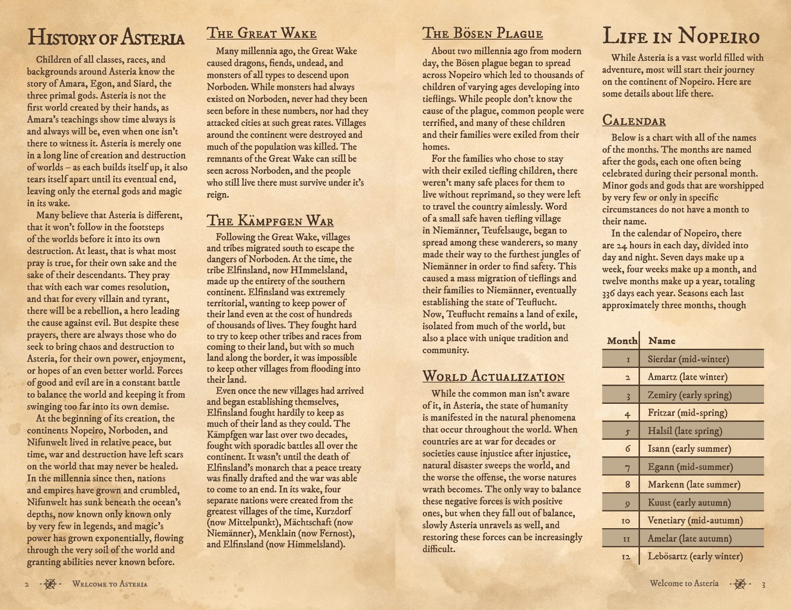
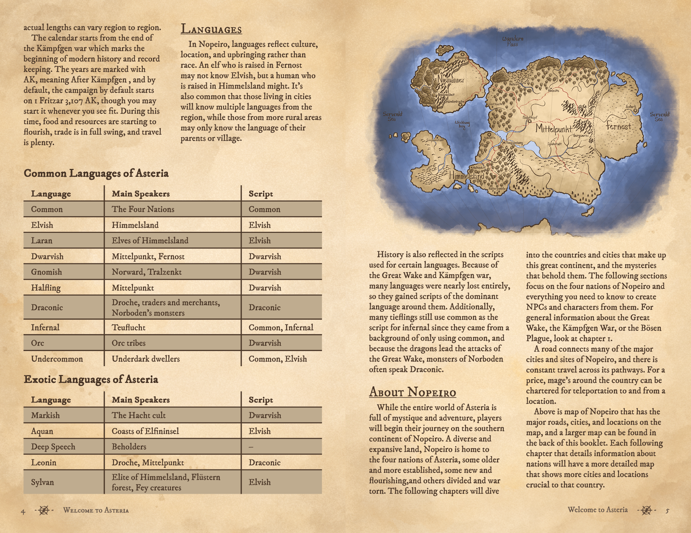
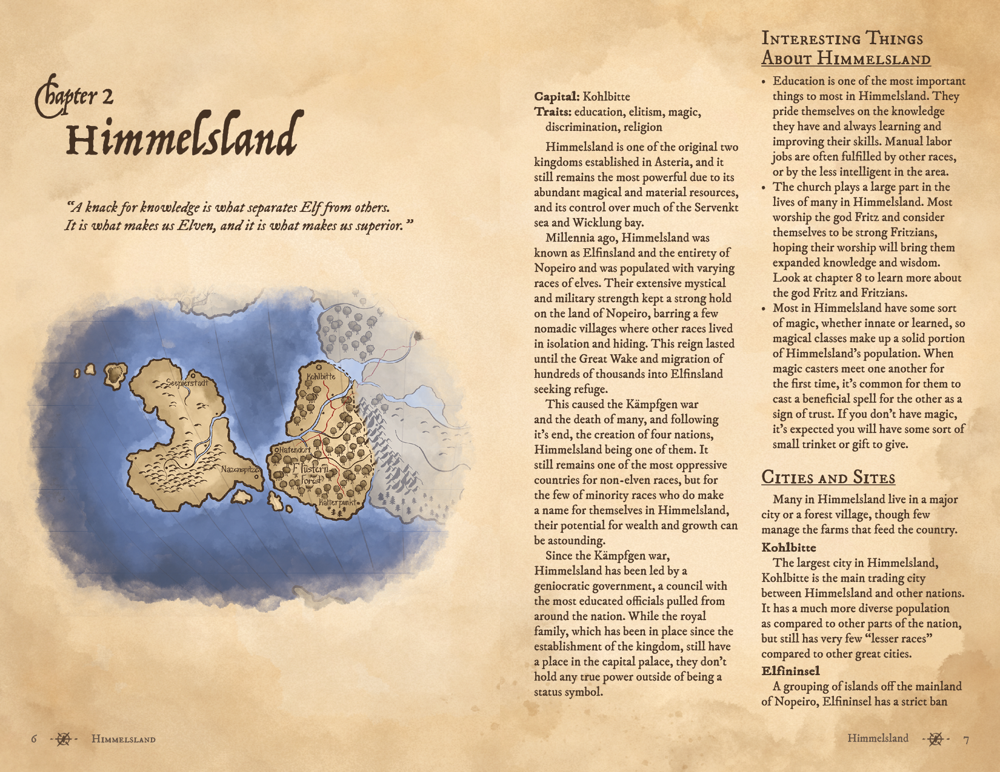
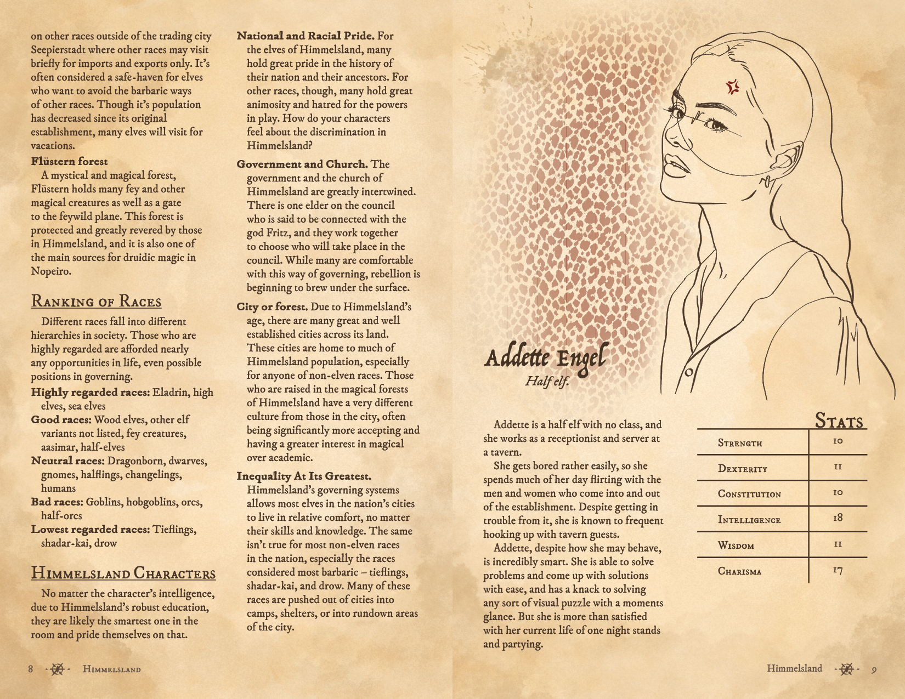
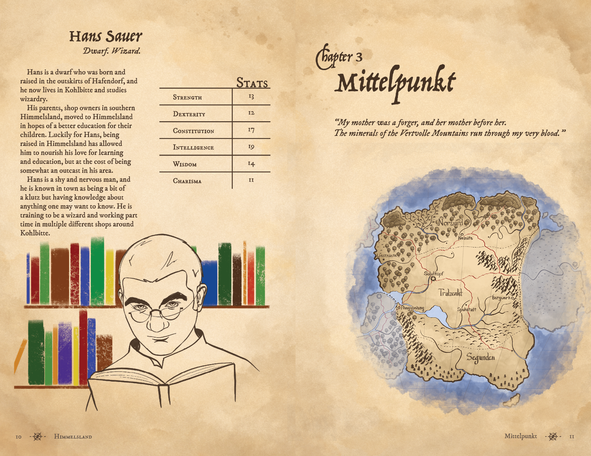
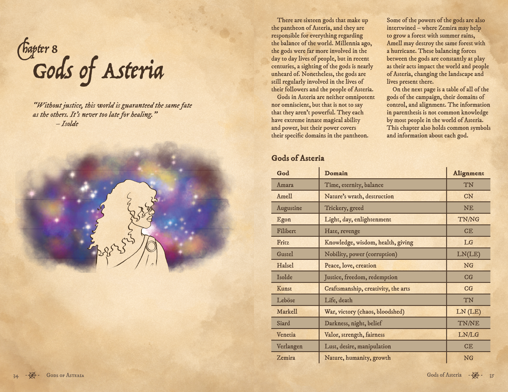
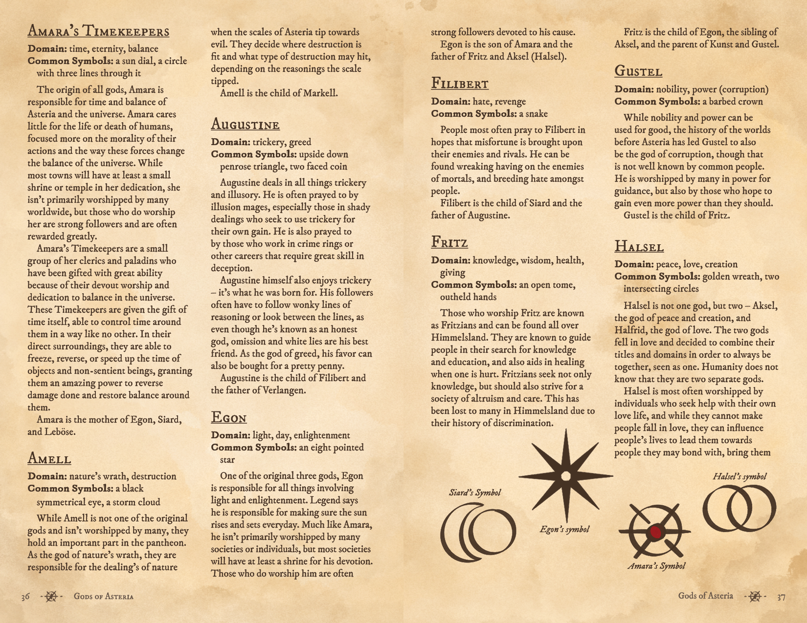
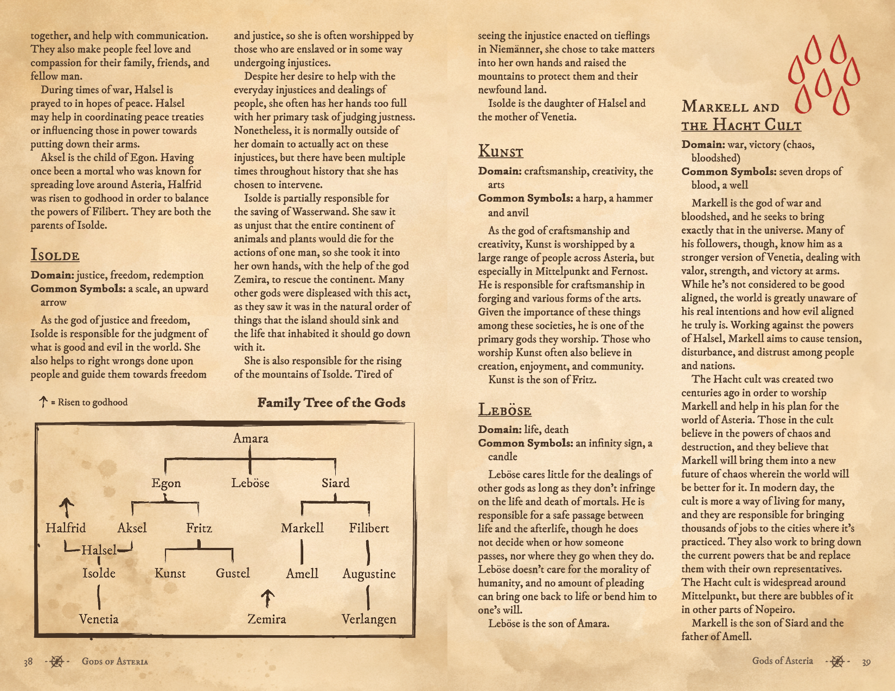
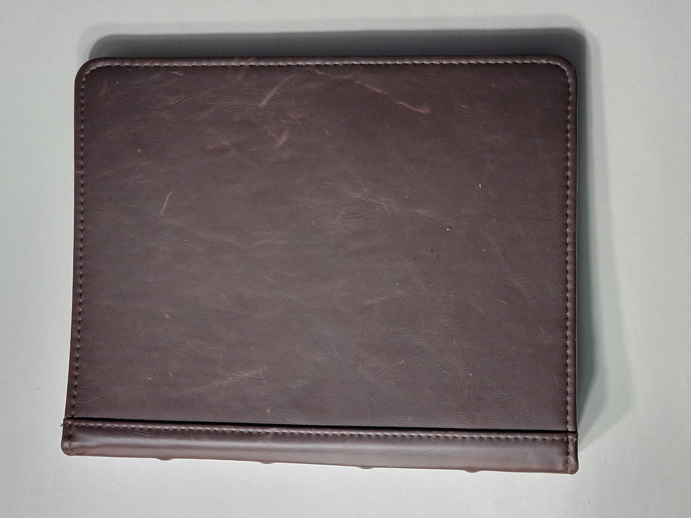
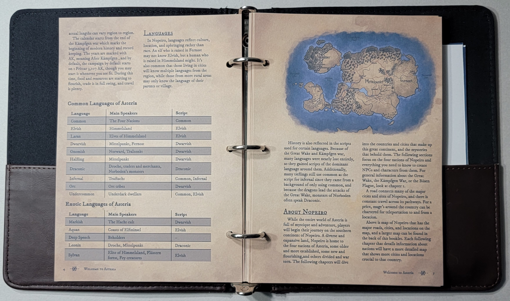